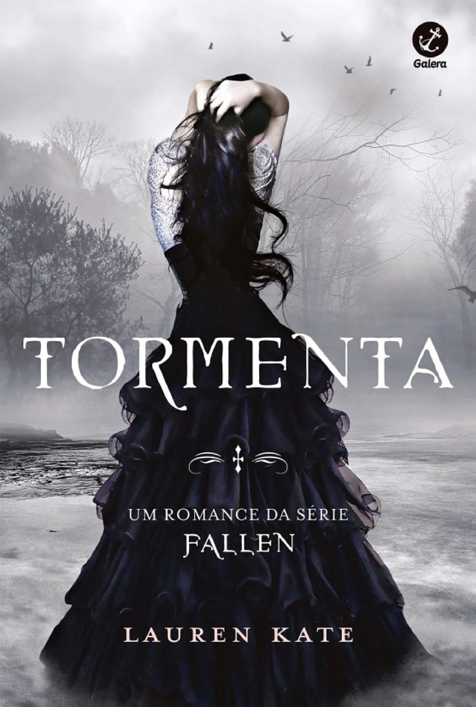

Tormenta - A Continuação
"Pois, se eu enxertar minhas asas nas suas
A aflição há de adiantar o voo em mim."
Tormenta é um livro de revolta! Muitas vezes, você se pega com vontade de contrariar as decisões de Luce. Sério, por que diabos ela não ficou com o Miles?? Ele é bonito, gentil e super atencioso, além disso, vemos que o Daniel não presta. Já ficou com tantas garotas durante o tempo em que Luce estava reencarnando.
Eu apoiei tanto a decisão dela de se conhecer, dar um passo, mesmo que arriscado, para saber quem foi anteriormente. É bem frustrante vê-la entrar em Shoreline e perceber que todos conhecem mais sobre ela do que ela própria. O maior romance da história, amaldiçoados por toda a eternidade...